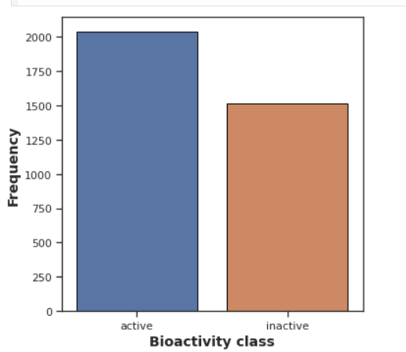
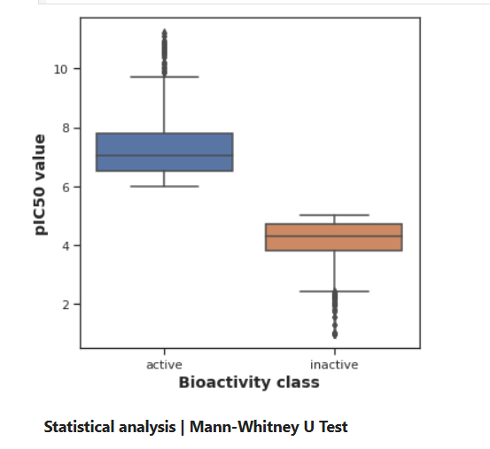
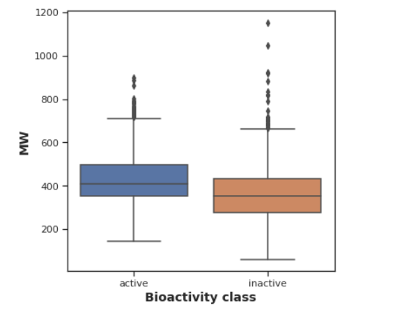
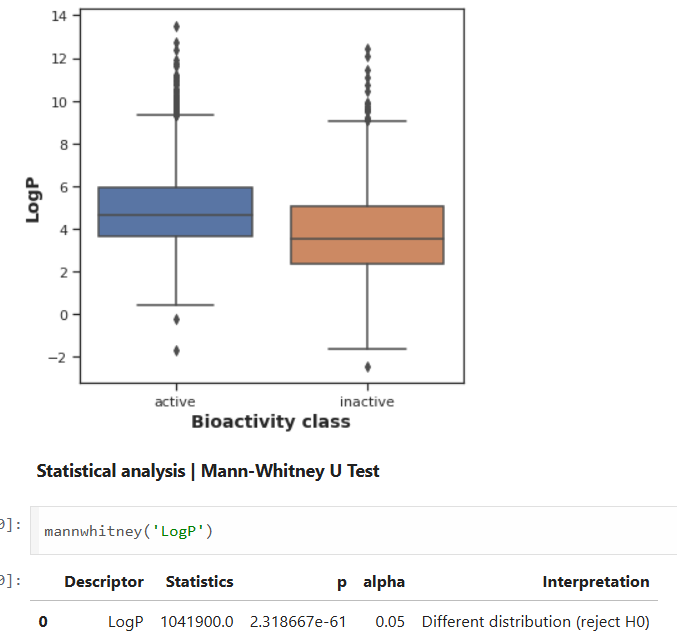
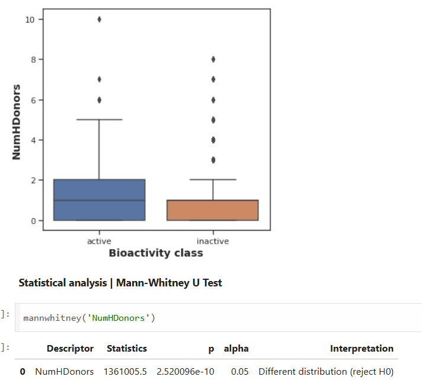
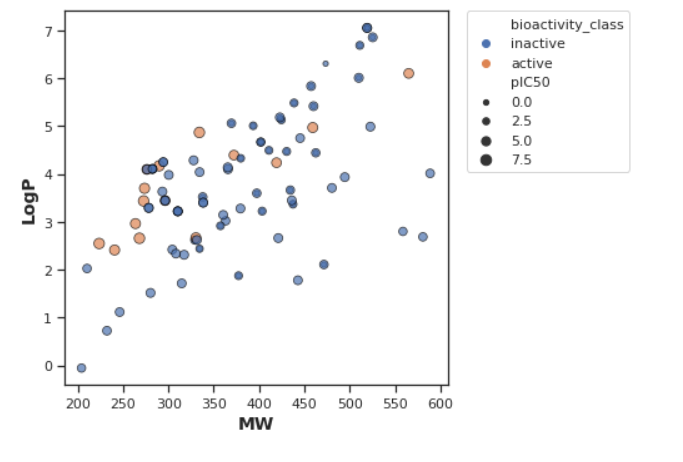
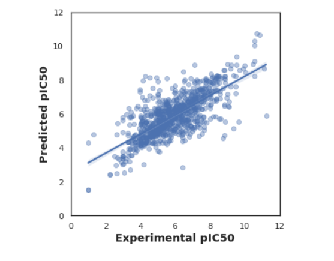
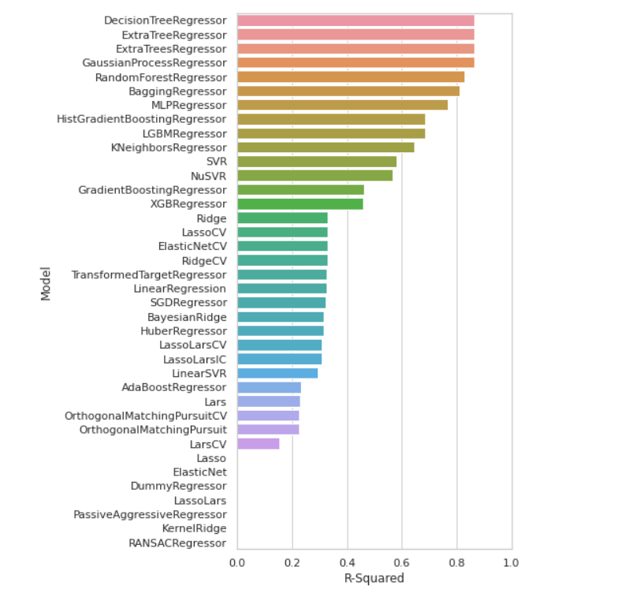
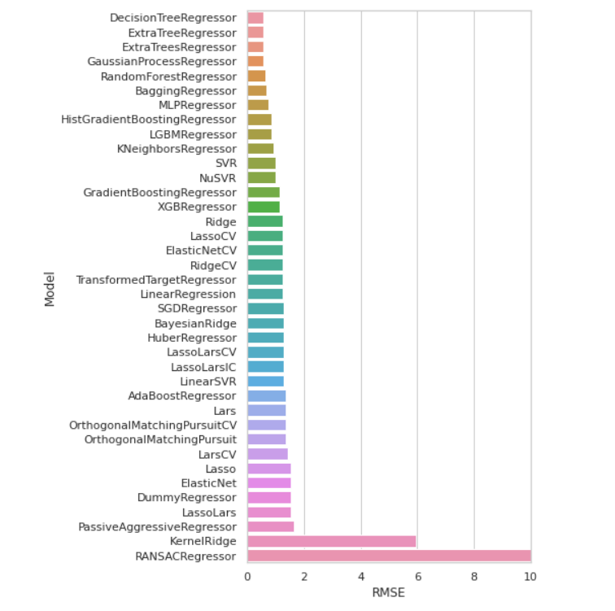
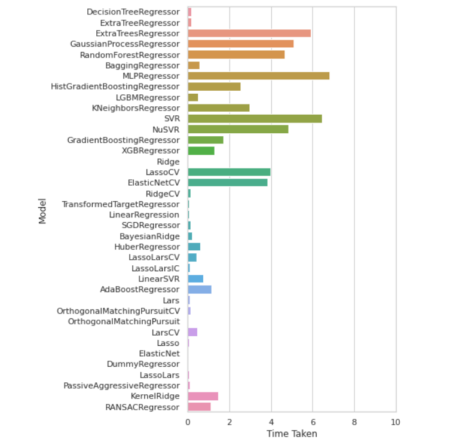

An end-to-end data science project exploring bioactivity prediction and cheminformatics-based drug discovery using ChEMBL data.
Part 1: Bioactivity Data Extraction
We start by retrieving relevant data from ChEMBL focused on acetylcholinesterase inhibitors. Ensuring the dataset is balanced, we distinguish active and inactive compounds.
This plot provides an overview of the frequency distribution of active vs inactive compounds across our dataset.

Image 1: Frequency of Active vs Inactive compounds in ChEMBL data.
Part 2: Descriptor Calculation & EDA
We examine how lipophilicity (logP) varies across activity groups using statistical tests.
Image 2: Mann-Whitney U test of logP between active/inactive compounds.
This boxplot shows how pIC50 values differ across compound classes.

Image 3: Distribution of pIC50 values for actives vs inactives.
Molecular weight is another key feature in drug-likeness. Here we visualize its correlation with bioactivity.

Image 4: Molecular weight vs bioactivity class.
We analyze combined effects of logP and MW on compound classification.

Image 5: Joint boxplot of logP and MW across activity labels.
Hydrogen bond donors can influence compound permeability. This boxplot shows the trends.

Image 6: Number of H-donors vs bioactivity class.
This scatter plot shows the continuous relationship between logP and MW.

Image 7: Scatter plot of logP vs Molecular Weight.
Part 3: Data Preparation
To prepare the data for modeling, we normalize numerical features, clean missing values, and engineer new ones. This creates a stable foundation for training ML models by minimizing biases introduced by outliers and unscaled variables.
Part 4: Regression Modeling
The Random Forest regression model is trained to predict pIC50 based on computed molecular descriptors. Below is the regression line showing predicted vs actual values.

Image 8: Predicted vs Experimental pIC50 with regression line.
Part 5: Model Comparison
We evaluate multiple regression algorithms to determine the most effective model. Here we observe how different models perform across metrics like RMSE and R^2.

Image 9: Comparison of multiple regression models.
This chart compares predicted values across models, showing relative consistency and outliers.

Image 10: Predicted pIC50 across different models.
Lastly, we examine variance and robustness of each model’s performance across the test set.

Image 11: Extended performance metrics for ensemble and baseline models.